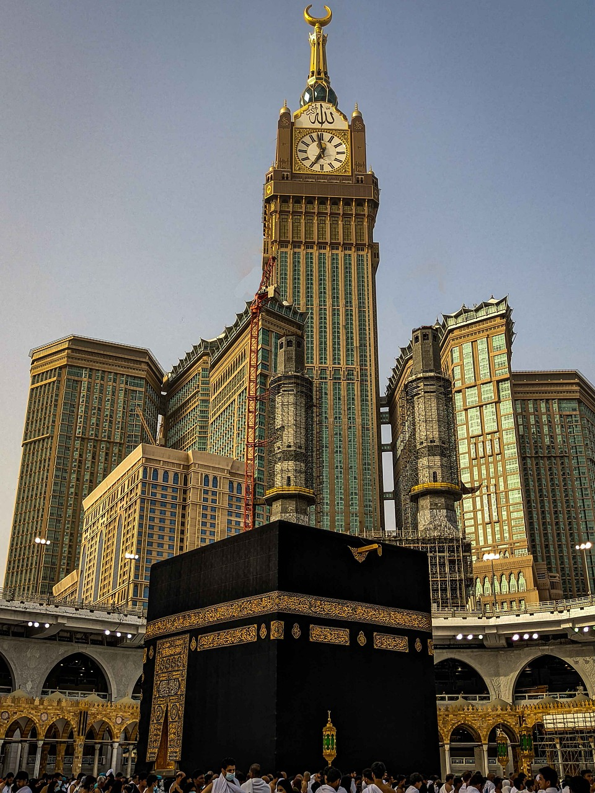
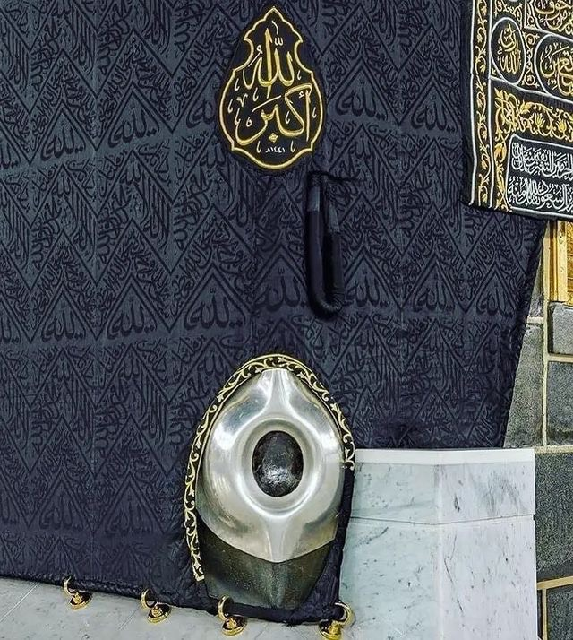

Mecque, occupant une vallée désertique dans l'ouest de l'Arabie saoudite,
est la ville la plus sainte de l'Islam : en effet, c'est la ville natale de
Mahomet et de la foi elle-même. Seuls les musulmans sont autorisés dans la ville,
et des millions d'entre eux s'y rendent pour le Hajj annuel (pèlerinage).
Datant du VIIe siècle, la Masjid al-Haram (Mosquée sacrée) entoure la Kaaba,
structure cubique recouverte de tissu constituant le sanctuaire le plus sacré
del'Islam.La mosquée al-Harâm (en arabe : المسجد الحرام,al-Masjid al-Ḥarâm,
« la Mosquée sacrée »), ou grande mosquée de la Mecque, est une mosquée de la
ville de La Mecque en Arabie saoudite. Elle est aussi le premier lieu saint
de l'islam et la plus grande mosquée du monde. Elle abrite en son centre la
Kaaba, le plus important sanctuaire de l'islam, dans lequel est enchâssée la
pierre noire : c'est elle que les musulmans tentent de toucher au cours des
ṭawāf (circumambulations) qu'ils accomplissent durant leur pèlerinage (hajj) ;
et c'est dans la direction de la Kaaba que les musulmans du monde entier (y
compris ceux qui se trouvent dans la mosquée al-Harâm) se tournent pour prier.
Kaaba marquait l'endroit où le monde sacré rencontrait
monde profane et la pierre noire était un symbole supplémentaire
de ce contact entre le divin et le terrestre.On attribue à Mahomet
l'installation de la pierre noire dans le mur de la Kaaba.Cette pierre
descendue du ciel, blanche à l'origine, serait un don de l'archange
Gabriel à Adam ou Abraham. À son emplacement, Adam aurait construit
un premier lieu de culte. Ensuite, les péchés des humains auraient
noirci la pierre. Une seconde roche sacrée,la Pierre bienheureuse,
se trouve dans l'angle sud.Car le fait de toucher ou de baiser la
Pierre exprime la vénération d'Allah le Puissant et Majestueux.
C'est pourquoi le Prophète (bénédiction et salut soient sur lui)
disait: Allhou akbar comme pour signifier qu'il s'agissait de vénérer
Allah le Puissant et Majestueux et non du simple fait de toucher la
Pierre.
